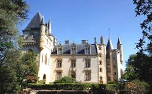
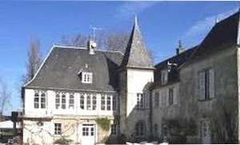

Recensement Jean-Claude Truffet
| Département | 03 — Allier |
| Canton | Souvigny |
| Commune | Autry-Issards |
| Type d'édifice | Château |
| Période d'origine | XVI |


Autry-Issards, plusieurs châteaux; dont celui d'Ardennes (voir article), de Boucheron du XV-XXe siècle avec deux tours circulaires (voir article), du Plessis (voir article), de Rimazoir (Voir Article), de la Trolière du XVe siècle enceintes colombier vestiges (voir article) et de Bigut du XVIIIe siècle (voir article). ISSARDS, vers 1280, Jean de Dreuille, damoiseau, seigneur de Dreuille et d'Issards épouse Brune de Bayet. Depuis cette date, les Dreuille sont seigneurs d'Issards durant tout le Moyen-Age. Parallèlement, le fief a d'autres seigneurs: en 1346, Jean de Verri, puis vers 1370 sa petite fille, Jeanne de la Laye, qui porte en mariage une partie de la terre et maison forte d'Issards à Jean de Murat. En 1458, Pierre de Murat, époux de Marguerite de Chari, est seigneur d'Issards. les Dreuille et les Murat construisent deux logements distincts. Jean de Dreuille pourrait être le commanditaire du logis neuf dont il ne reste que l'escalier d'honneur et la tour. En 1586, le mariage de Jacques de Dreuille et Marguerite de Murat reconstitue la seigneurie dans son entier. Jean de Murat aurait quant à lui fait moderniser l'ancien corps de bâtiment. Le logis raffiné d'époque Louis XI semble construit d'un seul jet, alors que l'autre mêle des constructions d'âges différents. Le soleil de Louis XIV et la devise dans l'escalier témoignent du passage de Mme de Montespan et du roi. En 1862, Louis Gabriel Carré d'Aligny épouse Marie Geneviève de Gaulmyn, qui lui apporte Issards en dot. Entre 1862 et 1870, ils font reconstruire le château par l'architecte Jean Moreau, à l'exception de la tour noble et de l'escalier d'honneur. La guerre de 1870 interrompt le chantier. En 1924, le comte d'Aligny demande à l'architecte Mitton d'achever le perron d'entrée.
château des Issards du XVe siècle, était composé d'une tour ronde médiévale desservie par une tourelle d'escalier gothique du XVe siècle, complété aux XVIIe siècle par un logis et une chapelle. En 1862, Jean Moreau y exécuta d'importants travaux d'agrandissement. Les bâtiments de cette période furent abattus et remplacés par un logis rectangulaire et une poterie, l'ensemble entouré de douves. Construit en pierre de taille, le château est couvert d'ardoise. Du XVe siècle ne subsistent que la tour noble et l'escalier d'honneur accolé. La base de la tour est renflée sous un talus et percée de trois canonnières. A l'intérieur, trois étages superposés ont chacun une salle, un cabinet et un judas surveillant l'escalier. Les fenêtres de ce corps de bâtiment sont à appui saillant, décors sculptés, croisée et encadrement de moulures. La porte d'entrée comporte un galbe en accolades et un tympan à décor armorié martelé. L'escalier se termine par une colonne centrale d'où rayonnent les huit nervures d'une voûte en parapluie reçues, sur l'extérieur, sur des culots de feuillages et personnage grotesque. En 1777, le château, entouré de fossés, comprenait chambres, tours. Le château du XIXe siècle comprend un porche d'entrée à toit en pavillon surmonté d'une chapelle, une tourelle d'angle, et, accolé à la partie ancienne, un logis presque carré double en profondeur, desservi par un escalier central et traversé par un couloir.
Famille de Jacques de Dreuille"
Le château d'Autry-Issards